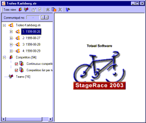

Work Views
Depending on which item is selected in the
event tree one of the following work views is displayed in the right
pane of the work space:
-
Publication view
Displayed for publications such as rankings,
classifications, communiqués, etcetera -
Competitors view
Displayed to allow editing of competitors
-
Teams view
Displayed to allow editing of teams -
Blank view
Displayed when the selected item requires no further
detailing

Work views are displayed in the right pane of the work space (blank view shown)